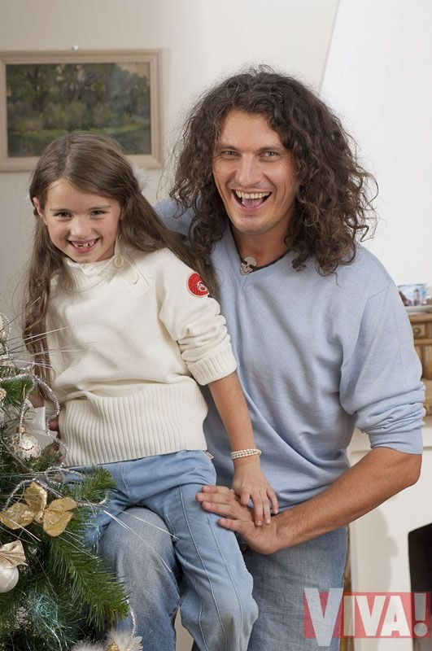
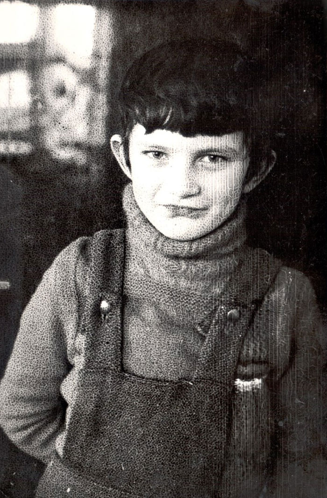
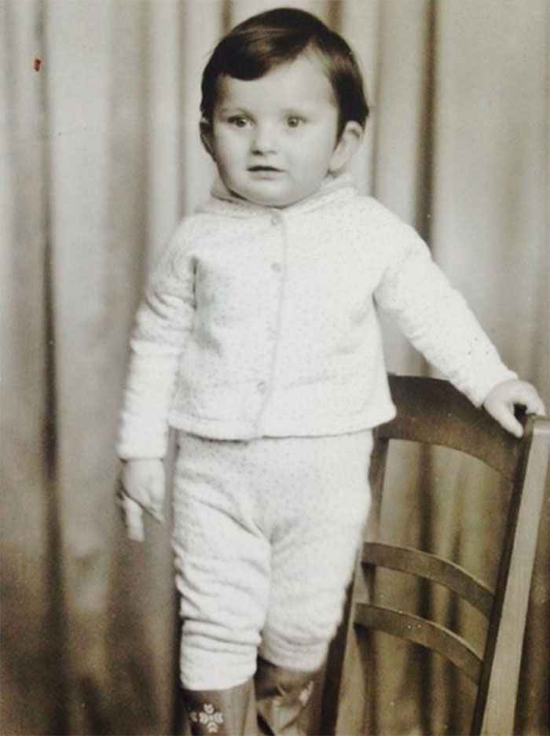
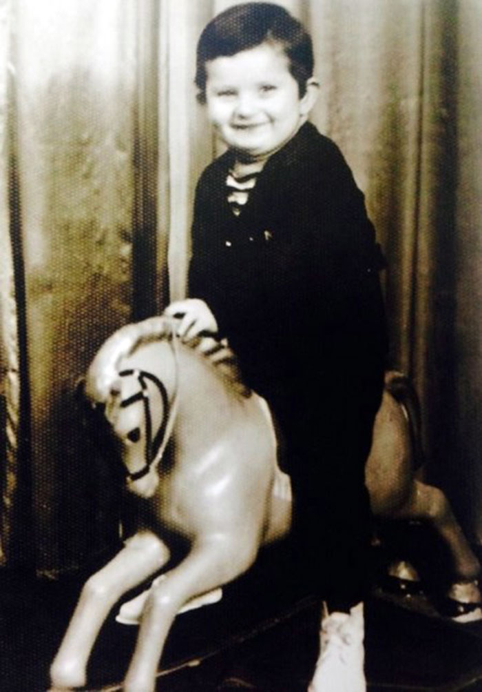
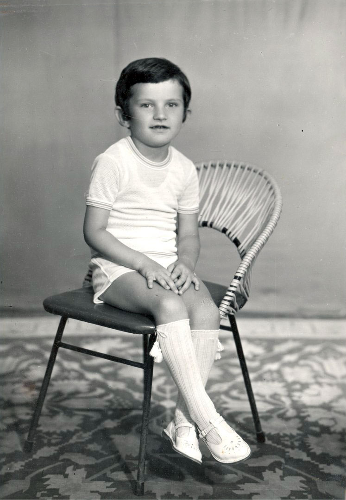
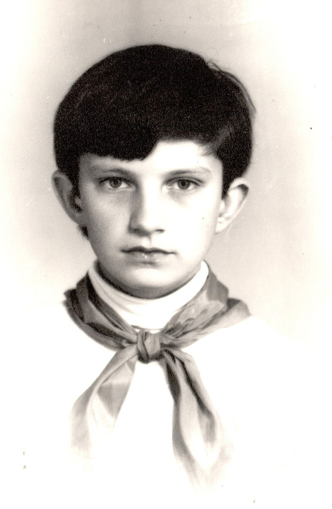

Фотографії з життя Скрябіна
Переглянути всі

Скрябін зі своєю дочкою

Скрябін на військовій службі
Скрябін на концерті

Кузьма на канікулах в селі
Фотографії з життя Скрябіна
Переглянути всіПерші кроки
Першим поштовхом до захоплення музикою була пісня The Beatles Lady Madonna, яку Кузьма почув у 10 років. Потім він зіграв її на електрогітарі з фанери, яку сам же зібрав і розмалював.
Рідкісні фото
Переглянути всі

Андрієві на цій фотографії 2,5 роки

Андрієві на цій фотографії 3 роки

Майбутньому співаку
близько 4-ьох років

Фотографія з дошки
пошани в музичній школі, 5 клас